7 Markov Chain Monte Carlo (MCMC)
7.1 King Markov and Adviser Metropolis
King Markov is king of a chain of 5 islands. Rather than live in a palace, he lives in a royal boat. Each night the royal boat anchors in the harbor of one of the islands. The law declares that the king must harbor at each island in proportion to the population of the island.
Question 1: If the populations of the islands are 100, 200, 300, 400, and 500 people, how often must King Markov harbor at each island?
King Markov has some personality quirks:
He can’t stand record keeping. So he doesn’t know the populations on his islands and doesn’t keep track of which islands he has visited when.
He can’t stand routine (variety is the spice of his life), so he doesn’t want to know each night where he will be the next night.
He asks Adviser Metropolis to devise a way for him to obey the law but that
- randomly picks which island to stay at each night,
- doesn’t require him to remember where he has been in the past, and
- doesn’t require him to remember the populations of all the islands.
He can ask the clerk on any island what the island’s population is whenever he needs to know. But it takes half a day to sail from one island to another, so he is limited in how much information he can obtain this way each day.
Metropolis devises the following scheme:
Each morning, have breakfast with the island clerk and inquire about the population of the current island.
Then randomly pick one of the 4 other islands (a proposal island) and travel there in the morning
Let \(J(b \mid a)\) be the conditional probability of selecting island \(b\) as the candidate if \(a\) is the current island.
\(J\) does not depend on the populations of the islands (since the King can’t remember them).
Over lunch at the proposal island, inquire about its population.
If the proposal island has more people, stay at the proposal island for the night (since the king should prefer more populated islands).
If the proposal island has fewer people, stay at the proposal island with probability \(A\), else return to the “current” island (ie, last night’s island).
Metropolis is convinced that for the right choices of \(J\) and \(A\), this will satisfy the law.
He quickly determines that \(A\) cannot be 0 and cannot be 1:
Question 2. What happens if \(A = 0\)? What happens if \(A = 1\)?
It seems like \(A\) might need to depend on the populations of the current and proposal islands. When we want to emphasize that, we’ll denote it as \(A = A(b \mid a)\). But how? If \(A\) is too large, the king will visit small islands too often. If \(A\) is too small, he will visit large islands too often.
Fortunately, Metropolis knows about Markov Chains. Unfortunately, some of you may not. So let’s learn a little bit about Markov Chains and then figure out how Metropolis should choose \(J\) and \(A\).
7.2 Quick Intro to Markov Chains
7.2.1 More info, please
This is going to be very quick. You can learn more, if you are interested, by going to
7.2.2 Definition
Consider a random process that proceeds in discrete steps (often referred to as time). Let \(X_t\) represent the “state” of the process at time \(t\). Since this is a random process, \(X_t\) is random, and we can ask probability questions like ``What is the probability of being in state ____ at time ____?", ie, What is \(\mathrm{Pr}(X_t = x)\)?
If \[ \mathrm{Pr}(X_{t+1} = x \mid X_t = x_t, X_{t-1} = x_{t-1}, \dots , X_0 = x_0) = \mathrm{Pr}(X_{t+1} \mid X_{t} = x_t) \] then we say that the process is a Markov Chain. The intuition is that (the probabilities of) what happens next depends only on the current state and not on previous history.
7.2.3 Time-Homogeneous Markov Chains
The simplest version of a Markov Chain is one that is time-homogeneous:
\[ \mathrm{Pr}(X_{t+1} = b \mid X_t = a) = p_{ab} \] That is, the (conditional) probability of moving from state \(a\) to state \(b\) in one step is the same at every time.
7.2.4 Matrix representation
A time-homogeneous Markov Chain can be represented by a square matrix \(M\) with
\[
M_{ij} = p_{ij} = \mbox{probability of transition from state $i$ to state $j$ in one step}
\]
(This will be an infinite matrix if the state space in infinite,
but we’ll start with simple examples with small, finite state spaces.)
\(M_{ij}\) is the probability of moving in one step from state \(i\) to state \(j\).
More generally, we will write \(M^{(k)}_{ij}\) for the probability of moving
from state \(i\) to state \(j\) in \(k\) steps.
Small Example:
M <- rbind( c(0, 0.5, 0.5), c(0.25, 0.25, 0.5), c(0.5, 0.3, 0.2))
M| 0.00 | 0.50 | 0.5 |
| 0.25 | 0.25 | 0.5 |
| 0.50 | 0.30 | 0.2 |
Question 3:
How many states does this process have?
What is the probability of moving from state 1 to state 3 in 1 step?
What is the probability of moving from state 1 to state 3 in 2 steps? (Hint: what are the possible stopping points along the way?)
How do we obtain \(M^{(2)}\) from \(M\)?
How do we obtain \(M^{(k)}\) from \(M\)?
Question 4: The Metropolis Algorithm as a Markov process
What are the states of the Metropolis algorithm?
If King Markov is on island 2, what is the probability of moving to Island 3?
If King Markov is on island 3, what is the probability of moving to Island 2?
What is the general formula for the probability of moving from island \(a\) to island \(b\) (in one step)? (\(\mathrm{Pr}(X_{t+1}=b \mid X_t = a)\))
7.2.5 Regular Markov Chains
A time-homogeneous Markov Chain, is called regular if there is a number \(k\) such that
- every state is reachable from every other state with non-zero probability in \(k\) steps
Question 5a
- Is our small example regular? If so, how many steps are required?
Question 5b
- Under what conditions is the Metropolis algorithm regular?
Regular Markov Chains have a very nice property:
\[ \lim_{k \to \infty} M^{(k)} = W \] where every row of \(W\) is the same. This says that, no matter where you start the process, the long-run probability of being in each state will be the same.
In our small example above, convergence is quite rapid:
M %^% 20| 0.2769 | 0.3385 | 0.3846 |
| 0.2769 | 0.3385 | 0.3846 |
| 0.2769 | 0.3385 | 0.3846 |
M %^% 21| 0.2769 | 0.3385 | 0.3846 |
| 0.2769 | 0.3385 | 0.3846 |
| 0.2769 | 0.3385 | 0.3846 |
Note: If we apply the matrix \(M\) to the limiting probability (\(w\), one row of \(W\)), we just get \(w\) back again:
\[w M = w\]
W <- M %^% 30
W[1,]## [1] 0.2769 0.3385 0.3846W[1,] %*% M| 0.2769 | 0.3385 | 0.3846 |
In fact, this is a necessary and sufficient condition for the limiting probability.
So, here’s what Metropolis needs to do: Choose \(J\) and \(A\) so that
- his algorithm is a regular Markov Chain with matrix \(M\)
- If \(w = \langle p(1), p(2), p(3), p(4), p(5) \rangle\) is the law-prescribed probabilities for island harboring, then \(w M = w\).
7.3 Back to King Markov
If \(A\) is between 0 and 1, and the jumping rule allows us to get to all the islands (eventually), then the Markov Chain will be regular, so there will be a limiting distribution. But the limiting distribution must be the one the law requires. It suffices to show that if the law is satisfied at time \(t\) it is satisfied at time \(t+1\) (\(wM = w\)):
\[ \mathrm{Pr}(X_t = a) = p(a) \mbox{ for all $a$ } \Rightarrow \mathrm{Pr}(X_{t+1} = a) = p(a) \mbox{ for all $a$} \]
Here’s the trick: We will choose \(J\) and \(A\) so that the following two unconditional probabilities are equal.
\[ \mathrm{Pr}(a \to_t b) = \mathrm{Pr}(b \to_t a) \] where \(\mathrm{Pr}(a \to_t b) = \mathrm{Pr}(X_t = a \ \& \ X_{t+1} = b)\).
Why does this work?
Suppose \(\mathrm{Pr}(X_t = a) = p(a)\) as the law prescribes.
\(\mathrm{Pr}(a \to_t b) = \mathrm{Pr}(b \to_t a)\) makes the joint distribution symmetric: For any \(a\) and any \(b\).
\[\mathrm{Pr}(X_{t} = a \ \& \ X_{t+1} = b) = \mathrm{Pr}(X_{t} = b \ \& \ X_{t+1} = a)\]
- This means that both marginals are the same, so for any \(a\):
\[\mathrm{Pr}(X_t = a) = \mathrm{Pr}(X_{t+1} = a)\]
- In other words, the probability of the current island will be the same as the probability of the next island: \(w M = w\).
Time for some algebra (and probability)! How do we choose \(J\) and \(A\)? Recall the ingredients:
- \(P(a)\) be the population of island \(a\)
- \(p(a)\) be the proportion of the total population living on island \(a\): \(p(a) = \frac{p(a)}{\sum_x p(x)}\)
- \(J(b \mid a)\) is the conditional probability of selecting island \(b\) as the candidate when \(a\) is the current island. (J for Jump probability)
- \(A(b \mid a)\) is the probability of accepting proposal island \(b\) if it is proposed from island \(a\).
Question 6: Consider two islands – \(a\) and \(b\) – with \(P(b) > P(a)\). Assume that probability of being on island \(x\) is \(p(x)\). Calculate the following probabilities (in terms of things like \(p\), \(J\), and \(A\)).
- (Unconditional) probability of moving from \(a\) to \(b = \mathrm{Pr}(a \to_t b) =\)
- (Unconditional) probability of moving from \(b\) to \(a = \mathrm{Pr}(b \to_t a) =\)
Question 7: How do we choose J and A to make these probabilities equal?
\[ A(a \mid b) = \phantom{\frac{p(a) J(b \mid a)}{p(b) J(a \mid b)}} \]
Question 8: Symmetric jump rules.
Is it possible to do this with symmetric jump rules? That is, can we require \(J(b \mid a) = J(a \mid b)\)? (Remember, the king doesn’t like to remember stuff, and this means half as much stuff to remember about the jump rules).
Does using a symmetric jump rule make the acceptance rule \(A\) any simpler or more complicated? (The king won’t be so happy if the simpler jump rule makes the acceptance rule a lot more complicated.)
Question 9: Constant jump rules.
Is it possible to do this if we require that \(J(y \mid x) = J(y' \mid x')\) for all \(y \neq x\) and \(y' \neq x'\)? (This would make life even easier for the king.)
For King Markov, what would \(J\) be if we did it this way?
The original Metropolis algorithm used symmetric jump rules. The later generalization (Metropolis-Hastings) employed non-symmetric jump rules to get better performance of the Markov Chain.
7.4 How well does the Metropolis Algorithm work?
Let’s let the computer simulate this algorithm. And since the computer is doing all the work, let’s make a general function so we can experiment a bit.
KingMarkov <- function(
num_steps = 1e5,
population = 1:5,
island_names = 1:length(population),
start = 1,
J = function(a, b) {1 / (length(population) - 1)}
) {
num_islands <- length(population)
island_seq <- rep(NA, num_steps) # trick to pre-alocate memory
proposal_seq <- rep(NA, num_steps) # trick to pre-alocate memory
current <- start
proposal <- NA
for (i in 1:num_steps) {
# record current island
island_seq[i] <- current
proposal_seq[i] <- proposal
# propose one of the other islands
other_islands <- setdiff(1:num_islands, current)
proposal <-
sample(other_islands, 1,
prob = purrr::map(other_islands, ~ J(current, .x)))
# move?
prob_move <- population[proposal] / population[current]
# new current island (either current current or proposal)
current <- ifelse(runif(1) < prob_move, proposal, current)
}
tibble(
step = 1:num_steps,
island = island_names[island_seq],
proposal = island_names[proposal_seq]
)
}Question 10: Look at the code above and answer the following.
What are the default populations of the islands?
What is the default jump rule?
Explain what each of the following bits of code are doing:
other_islands <- setdiff(1:num_islands, current)prob = purrr::map(other_islands, ~ J(current, .x))- the call to
sample() prob_move <- population[proposal] / population[current]current <- ifelse(runif(1) < prob_move, proposal, current)- the call to
tibble()
7.4.1 Jumping to any island
Now let’s simulate the first 5000 nights of King Markov’s reign.
Tour <- KingMarkov(5000)
Target <- tibble(island = 1:5, prop = (1:5)/ sum(1:5))
gf_line(island ~ step, data = Tour %>% filter(step <= 200)) %>%
gf_point(proposal ~ step, data = Tour %>% filter(step <= 200),
color = "red", alpha = 0.4) %>%
gf_refine(scale_y_continuous(breaks = 1:10)) ## Warning: Removed 1 rows containing missing values (geom_point).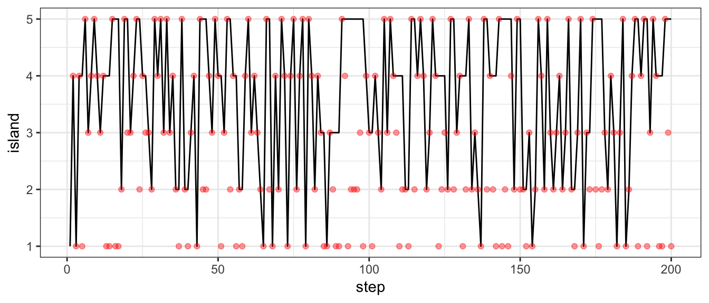
gf_dhistogram( ~ island, data = Tour, binwidth = 1, color = "black") %>%
gf_point(prop ~ island, data = Target, color = "red") %>%
gf_refine(scale_x_continuous(breaks = 1:10))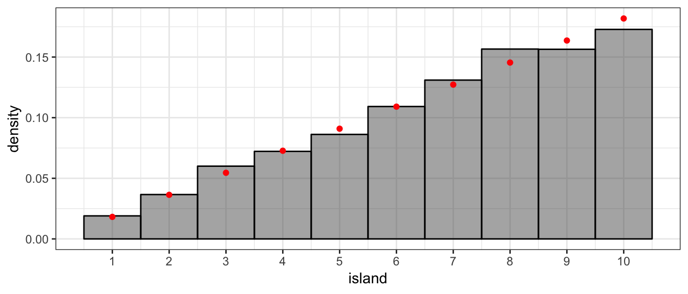
Question 11: Look at the first plot. It shows where the king stayed each of the first 200 nights.
Did the king ever stay two consecutive nights on the same island? (How can you tell from the plot?)
Did the king ever stay two consecutive nights on the smallest island? (How can you answer this without looking at the plot?)
7.4.2 Jumping only to neighbor islands
What if we only allow jumping to neighboring islands? (Imagine the islands are arranged in a circle and we only sail clockwise or counterclockwise around the circle to the nearest island.)
neighbor <- function(a, b) as.numeric(abs(a-b) %in% c(1,4))
Tour <- KingMarkov(10000, population = 1:5, J = neighbor)
Target <- tibble(island = 1:5, prop = (1:5)/ sum(1:5))
gf_line(island ~ step, data = Tour %>% filter(step <= 200)) %>%
gf_refine(scale_y_continuous(breaks = 1:10))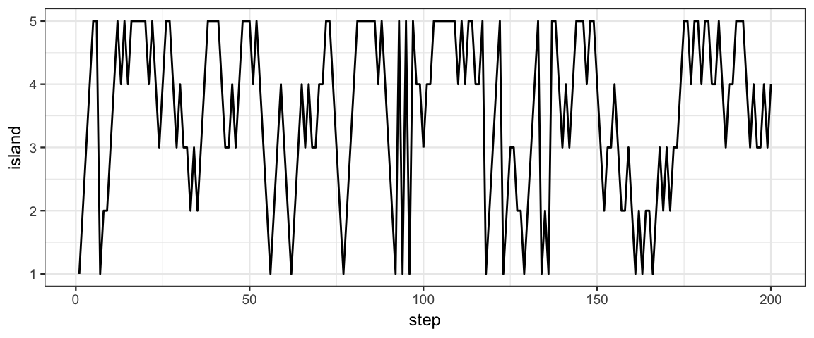
gf_dhistogram( ~ island, data = Tour, binwidth = 1) %>%
gf_point(prop ~ island, data = Target, color = "red") %>%
gf_refine(scale_x_continuous(breaks = 1:10))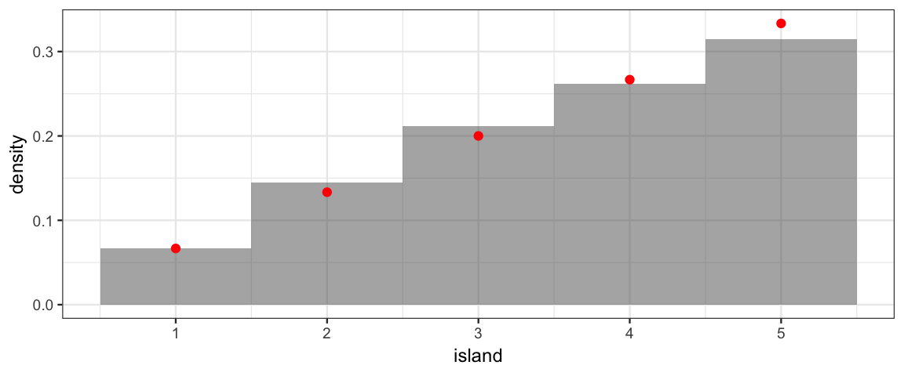
The effect of visiting only neighbors is more dramatic with more islands.
neighbor <- function(a, b) as.numeric(abs(a-b) %in% c(1,9))
Tour <- KingMarkov(10000, population = 1:10, J = neighbor)
Target <- tibble(island = 1:10, prop = (1:10)/ sum(1:10))
gf_line(island ~ step, data = Tour %>% filter(step <= 200)) %>%
gf_refine(scale_y_continuous(breaks = 1:10))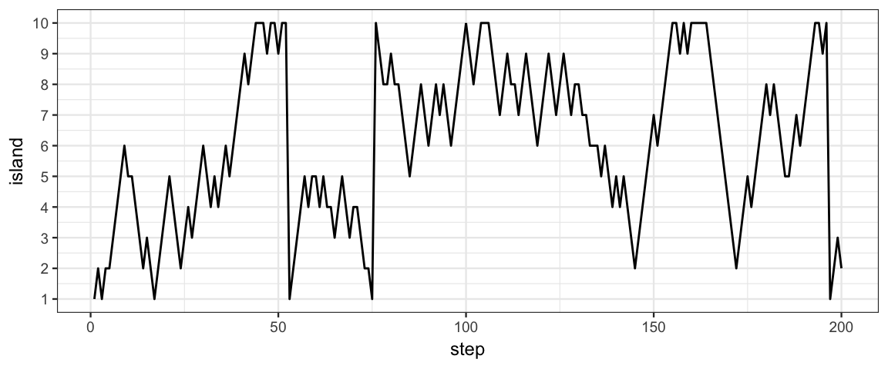
gf_dhistogram( ~ island, data = Tour, binwidth = 1) %>%
gf_point(prop ~ island, data = Target, color = "red") %>%
gf_refine(scale_x_continuous(breaks = 1:10))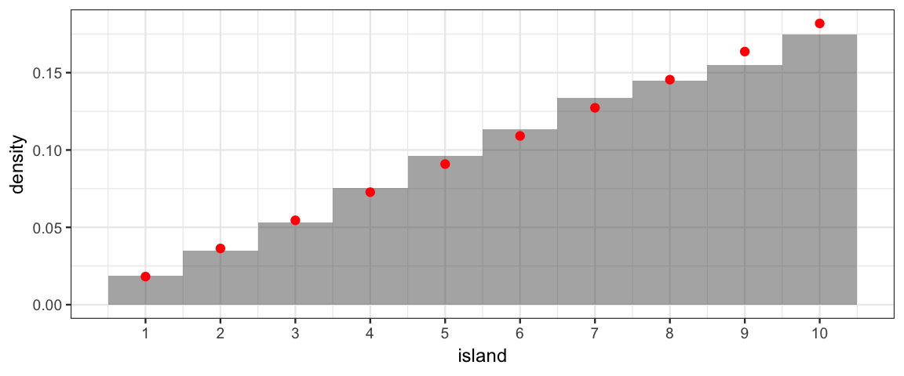
7.5 Markov Chains and Posterior Sampling
That was a nice story, and some nice probability theory. But what does it have to do with Bayesian computation? Regular Markov Chains (and some generalizations of them) can be used to sample from a posterior distribution:
- state = island = set of parameter values
- in typical applications, this will be an infinite state space
- population = prior * likelihood
- importantly, we do not need to normalize the posterior; that would typically be a very computationally expensive thing to do
- start in any island = start at any parameter values
- convergence may be faster from some starting states than from others, but in principle, any state will do
- randomly choose a proposal island = randomly select a proposal set of parameter values
- if the posterior is greater there, move
- if the posterior is smaller, move anyway with probability
\[A = \frac{\mbox{proposal `posterior'}}{\mbox{current `posterior'}}\]
Metropolis-Hastings variation:
- More choices for \(J()\) (need not be symmetric) gives more opportunity to tune for convergence
Other variations:
- Can allow \(M\) to change over the course of the algorithm. (No longer time-homogeneous.)
7.5.1 Example 1: Estimating a proportion
To see how this works in practice, let’s consider our familiar model that has a Bernoulli likelihood and a beta prior:
- \(Y_i \sim {\sf Bern}(\theta)\)
- \(\theta \sim {\sf Beta}(a, b)\)
Since we are already familiar with situation, we know that the posterior should be a beta distribution when the prior is a beta distribution. We can use this information to see how well the algorithm works in that situation.
Let’s code up our Metropolis algorithm for this situation. There is a new wrinkle, however: The state space for the parameter is a continuous interval [0,1]. So we need a new kind of jump rule
Instead of sampling from a finite state space, we use
rnorm()The standard deviation of the normal distribution (called
sizein the code below) controls how large a step we take (on average). This number has nothing to do with the model, it is a tuning parameter of the algorithm.
metro_bern <- function(
x, n, # x = successes, n = trials
size = 0.01, # sd of jump distribution
start = 0.5, # value of theta to start at
num_steps = 1e4, # number of steps to run the algorithm
prior = dunif, # function describing prior
... # additional arguments for prior
) {
theta <- rep(NA, num_steps) # trick to pre-alocate memory
proposed_theta <- rep(NA, num_steps) # trick to pre-alocate memory
move <- rep(NA, num_steps) # trick to pre-alocate memory
theta[1] <- start
for (i in 1:(num_steps-1)) {
# head to new "island"
proposed_theta[i + 1] <- rnorm(1, theta[i], size)
if (proposed_theta[i + 1] <= 0 ||
proposed_theta[i + 1] >= 1) {
prob_move <- 0 # because prior is 0
} else {
current_prior <- prior(theta[i], ...)
current_likelihood <- dbinom(x, n, theta[i])
current_posterior <- current_prior * current_likelihood
proposed_prior <- prior(proposed_theta[i+1], ...)
proposed_likelihood <- dbinom(x, n, proposed_theta[i+1])
proposed_posterior <- proposed_prior * proposed_likelihood
prob_move <- proposed_posterior / current_posterior
}
# sometimes we "sail back"
if (runif(1) > prob_move) { # sail back
move[i + 1] <- FALSE
theta[i + 1] <- theta[i]
} else { # stay
move[i + 1] <- TRUE
theta[i + 1] <- proposed_theta[i + 1]
}
}
tibble(
step = 1:num_steps,
theta = theta,
proposed_theta = proposed_theta,
move = move, size = size
)
}Question 12: What happens if the proposed value for \(\theta\) is not in the interval \([0,1]\)? Why?
Question 13: What do proposed_posterior and current_posterior
correspond to in the story of King Markov?
Question 14: Notice that we are using the unnormalized posterior. Why don’t we need to normalize the posterior? Why is it important that we don’t have to normalize the posterior?
7.5.1.1 Looking at posterior samples
The purpose of all this was to get samples from the posterior distribution. We can use histograms or density plots to see what our MCMC algorithm shows us for the posterior distribution. When using MCMC algorithms, we won’t typically have ways of knowing the “right answer”. But in this case, we know the posterior is Beta(6, 11), so we can compare our posterior samples to that distribution to see how well things worked.
Let’s try a nice small step size like 0.2%.
set.seed(341)
Tour <- metro_bern(5, 15, size = 0.002)
gf_dhistogram(~ theta, data = Tour, bins = 100) %>%
gf_dens(~ theta, data = Tour) %>%
gf_dist("beta", shape1 = 6, shape2 = 11, color = "red")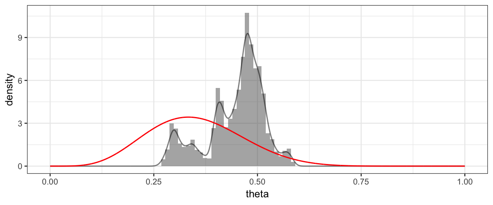
Hmm. That’s not too good. Let’s see if we can figure out why.
7.5.1.2 Trace Plots
A trace plot shows the “tour of King Markov’s ship” – the sequence of parameter values sampled (in order).
gf_line(theta ~ step, data = Tour) %>%
gf_hline(yintercept = 5/15, color = "red") Question 15: Why does the trace plot begin at a height of 0.5?
Question 16: What features of this trace plot indicate that our posterior sampling isn’t working well? Would making the step size larger or smaller be more likely to help?
Question 17: Since we know that the posterior distribution is Beta(6, 11), how could we use R to show us what an ideal trace plot would look like?
7.5.1.3 Comparing step sizes
Let’s see how our choice of step affects the sampling.
Size 0 is sampling from a true Beta(6, 11) distribution.
set.seed(341)
Tours <-
bind_rows(
metro_bern(5, 15, size = 0.02),
metro_bern(5, 15, size = 0.2),
metro_bern(5, 15, size = 0.002),
tibble(theta = rbeta(1e4, 6, 11), size = 0, step = 1:1e4)
)gf_dhistogram( ~ theta | size ~ ., data = Tours, bins = 100) %>%
gf_dist("beta", shape1 = 6, shape2 = 11, color = "red")
Sizes 0.2 and 0.02 look much better than 0.002.
Looking at the trace plots, we see that the samples using a step size of 0.02 are still highly auto-correlated (neighboring values are similar to each other). Thus the “effective sample size” is not nearly as big as the number of posterior samples we have generated.
With a step size of 0.2, the amount of auto-correlation is substantially reduced, but not eliminated.
gf_line(theta ~ step, data = Tours) %>%
gf_hline(yintercept = 5/14, color = "red") %>%
gf_facet_grid(size ~ .) %>%
gf_lims(x = c(0,1000))## Warning: Removed 9000 rows containing missing values (geom_path).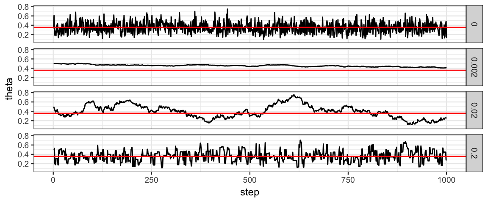
7.5.1.4 Auto-correlation and Thinning
One way to reduce the auto-correlation in posterior samples is by
thinning. This auto-correlation plot suggests that keeping every 7th
or 8th value when size is 0.2 should give us a posterior sample that
is nearly independent.
acf(Tours %>% filter(size == 0.2) %>% pull(theta))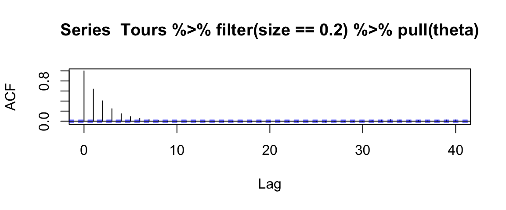
gf_line(theta ~ step, data = Tours %>% filter(step %% 8 == 0)) %>%
gf_hline(yintercept = 5/14, color = "red") %>%
gf_facet_grid(size ~ .) %>%
gf_lims(x = c(0,1000))## Warning: Removed 1125 rows containing missing values (geom_path).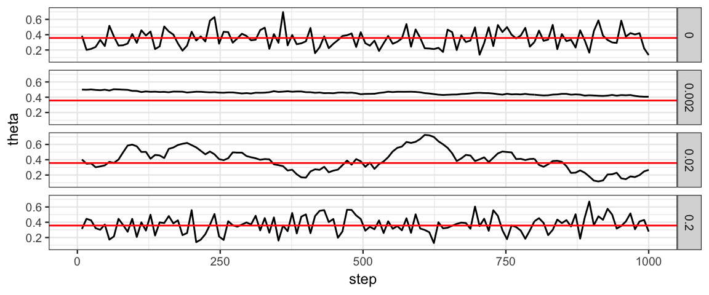
Now the idealized trace plot and the trace plot for step = 0.2 are
quite similar looking. So the effective sample size for that step size
is approximately 1/8 the number of posterior samples generated.
For step=0.02 we must thin even more, which would require generating
many more posterior samples to begin with:
ACF <-
broom::tidy(acf(Tours %>% filter(size == 0.02, step > 1000) %>% pull(theta),
plot = FALSE, lag.max = 50))
gf_col(acf ~ lag, data = ACF, width = 0.2)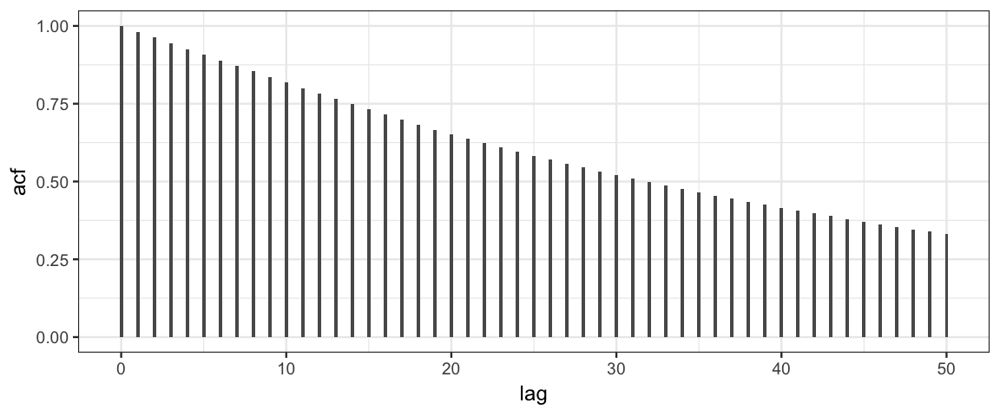
7.5.2 Example 2: Estimating mean and variance
Consider the following simple model:
- \(Y_i \sim {\sf Norm}(\mu, \sigma)\)
- \(\mu \sim {\sf Norm}(0, 1)\)
- \(\log(\sigma) \sim {\sf Norm}(0,1)\)
In this case the posterior distribution for \(\mu\) can be worked out exactly and should be normal.
Let’s code up our Metropolis algorithm for this situation. New stuff:
- we have two parameters, so we’ll use separate jumps for each and combine
- we could use a jump rule based on both values together, but we’ll keep this simple
- the state space for each parameter is infinite, so we need a new kind of jump rule
- instead of sampling from a finite state space, we use
rnorm() - the standard deviation controls how large a step we take (on average)
- example below uses same standard deviation for both parameters, but we should select them individually if the parameters are on different scales
- instead of sampling from a finite state space, we use
metro_norm <- function(
y, # data vector
num_steps = 1e5,
size = 1, # sd's of jump distributions
start = list(mu = 0, log_sigma = 0)
) {
size <- rep(size, 2)[1:2] # make sure exactly two values
mu <- rep(NA, num_steps) # trick to pre-alocate memory
log_sigma <- rep(NA, num_steps) # trick to pre-alocate memory
move <- rep(NA, num_steps) # trick to pre-alocate memory
mu[1] <- start$mu
log_sigma[1] <- start$log_sigma
move[1] <- TRUE
for (i in 1:(num_steps - 1)) {
# head to new "island"
mu[i + 1] <- rnorm(1, mu[i], size[1])
log_sigma[i + 1] <- rnorm(1, log_sigma[i], size[2])
move[i + 1] <- TRUE
log_post_current <-
dnorm(mu[i], 0, 1, log = TRUE) +
dnorm(log_sigma[i], 0, 1, log = TRUE) +
sum(dnorm(y, mu[i], exp(log_sigma[i]), log = TRUE))
log_post_proposal <-
dnorm(mu[i + 1], 0, 1, log = TRUE) +
dnorm(log_sigma[i + 1], 0, 1, log = TRUE) +
sum(dnorm(y, mu[i + 1], exp(log_sigma[i+1]), log = TRUE))
prob_move <- exp(log_post_proposal - log_post_current)
# sometimes we "sail back"
if (runif(1) > prob_move) {
move[i + 1] <- FALSE
mu[i + 1] <- mu[i]
log_sigma[i + 1] <- log_sigma[i]
}
}
tibble(
step = 1:num_steps,
mu = mu,
log_sigma = log_sigma,
move = move,
size = paste(size, collapse = ", ")
)
}Let’s use the algorithm with three different size values and compare results.
set.seed(341)
y <- rnorm(25, 1, 2) # sample of 25 from Norm(1, 2)
Tour1 <- metro_norm(y = y, num_steps = 5000, size = 1)
Tour0.1 <- metro_norm(y = y, num_steps = 5000, size = 0.1)
Tour0.01 <- metro_norm(y = y, num_steps = 5000, size = 0.01)
Norm_Tours <- bind_rows(Tour1, Tour0.1, Tour0.01)df_stats(~ move | size, data = Norm_Tours, props)| size | prop_FALSE | prop_TRUE |
|---|---|---|
| 0.01, 0.01 | 0.0422 | 0.9578 |
| 0.1, 0.1 | 0.2380 | 0.7620 |
| 1, 1 | 0.9134 | 0.0866 |
7.5.2.1 Density plots
gf_dhistogram( ~ mu | size ~ ., data = Norm_Tours, bins = 100) 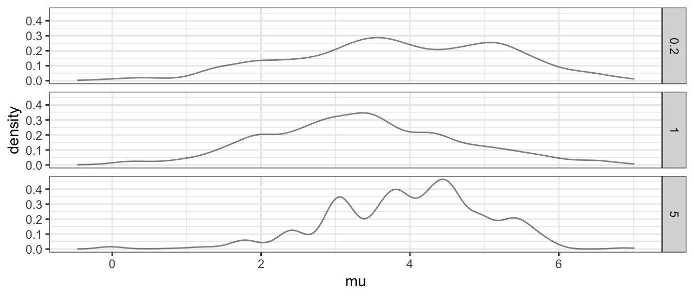
gf_dhistogram( ~ exp(log_sigma) | size ~ ., data = Norm_Tours, bins = 100)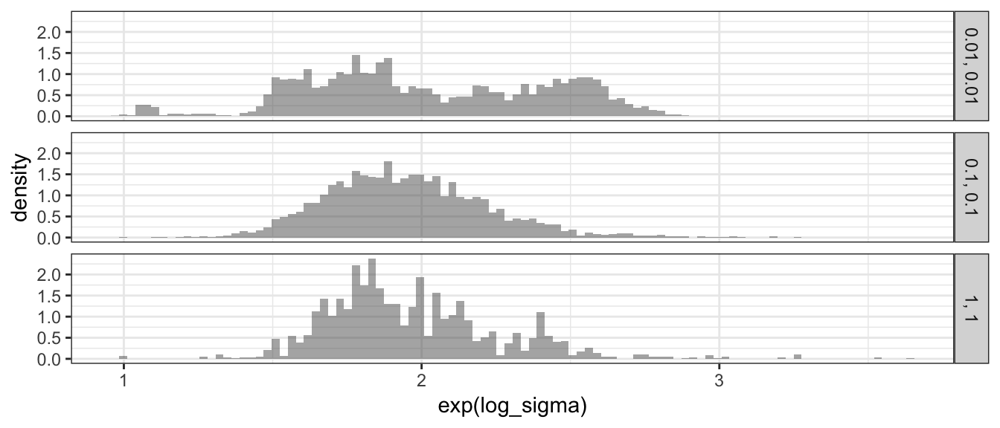
7.5.2.2 Trace plots
gf_line(mu ~ step | size ~ ., data = Norm_Tours) 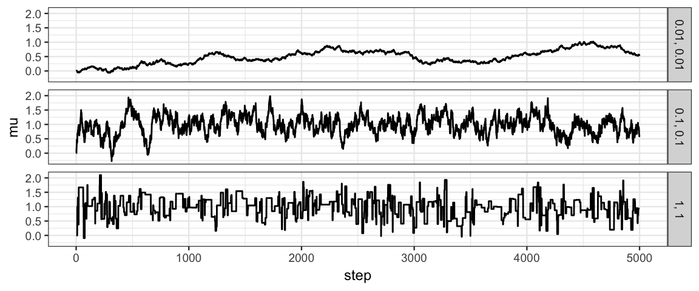
gf_line(log_sigma ~ step | size ~ ., data = Norm_Tours)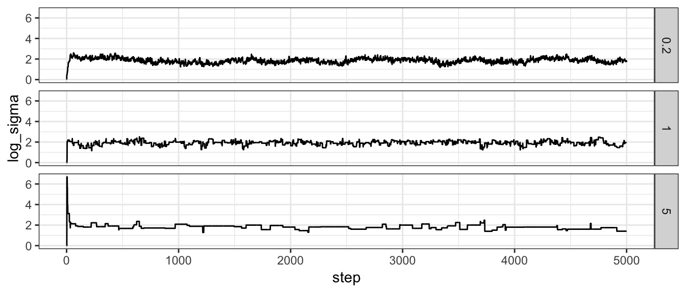
7.5.2.3 Comparing Multiple Chains
If we run multiple chains with different starting points and different random choices, we hope to see similar trace plots. After all, we don’t want our analysis to be an analysis of starting points or of random choices.
Tour1a <- metro_norm(y = y, num_steps = 5000, size = 1) %>% mutate(chain = "A")
Tour1b <- metro_norm(y = y, num_steps = 5000, size = 1) %>% mutate(chain = "B")
Tour1c <- metro_norm(y = y, num_steps = 5000, size = 1, start = list(mu = 10, log_sigma = 5)) %>% mutate(chain = "C")
Tour1d <- metro_norm(y = y, num_steps = 5000, size = 1, start = list(mu = 10, log_sigma = 5)) %>% mutate(chain = "D")
Tours1 <- bind_rows(Tour1a, Tour1b, Tour1c, Tour1d)gf_line(mu ~ step, color = ~chain, alpha = 0.5, data = Tours1)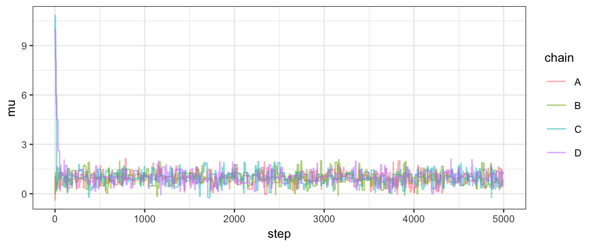
gf_line(mu ~ step, color = ~chain, alpha = 0.5, data = Tours1) %>%
gf_facet_grid( chain ~ .)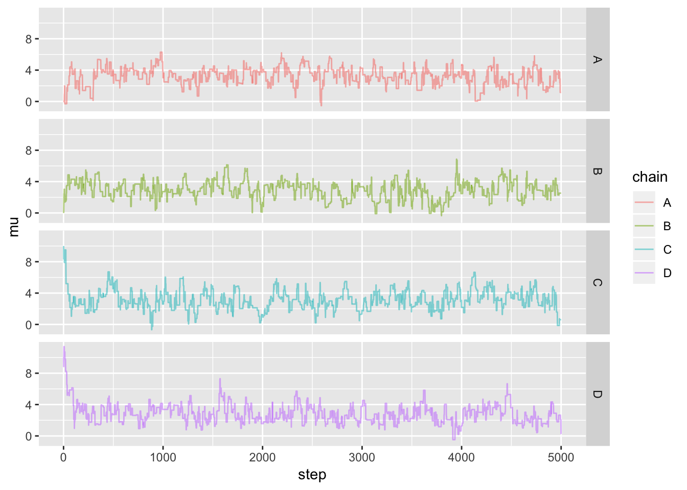
7.5.2.4 Comparing Chains to an Ideal Chain
Not all posteriors are normal, but here’s what a chain would look like if the posterior is normal and there is no correlation between draws.
Ideal <- tibble(step = 1:5000, mu = rnorm(5000, 1, .3), size = "ideal")
gf_line(mu ~ step | size, data = Norm_Tours %>% bind_rows(Ideal))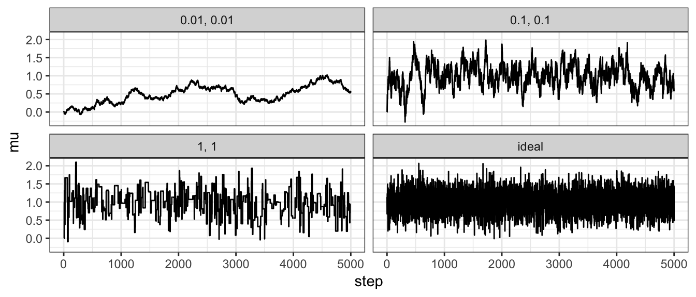
If the draws are correlated, then we might get more ideal behavior if we selected only a subset – every 20th or every 30th value, for example. This is the idea behind “effective sample size”. The effective sample size of a correlated chain is the length of an ideal chain that contains as much independent information as the correlated chain.
acf(Norm_Tours %>% filter(size == "1, 1") %>% pull(mu))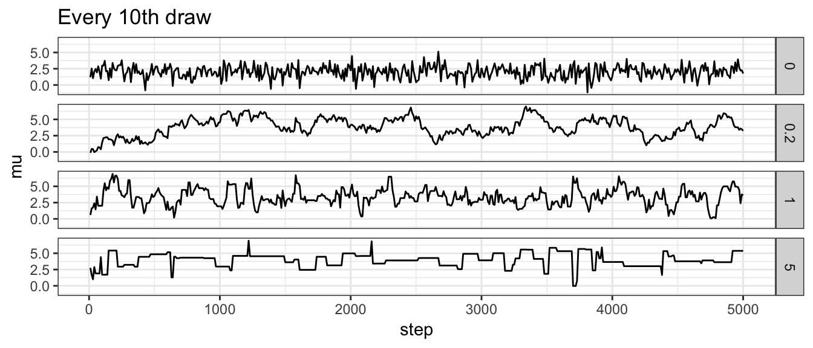
gf_line(mu ~ step | size ~ ., data = bind_rows(Norm_Tours, Ideal) %>% filter(step %% 20 == 0)) %>%
gf_labs(title = "Every 20th draw")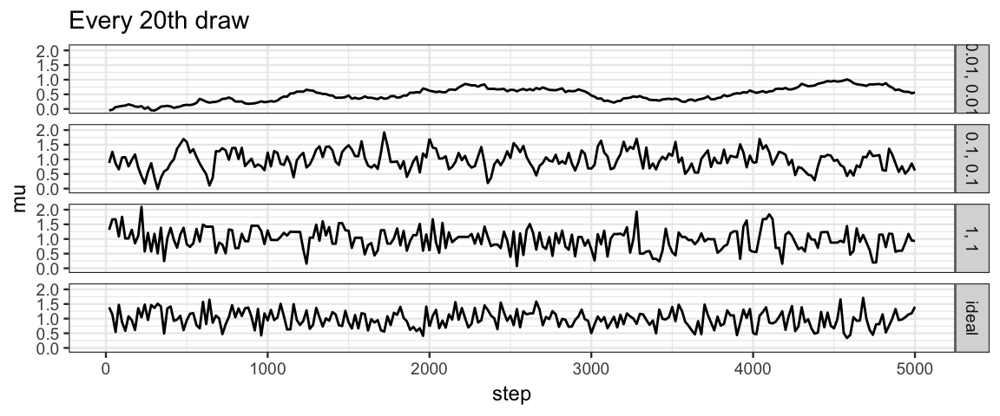
gf_line(mu ~ step | size ~ ., data = bind_rows(Norm_Tours, Ideal) %>% filter(step %% 30 == 0)) %>%
gf_labs(title = "Every 30th draw")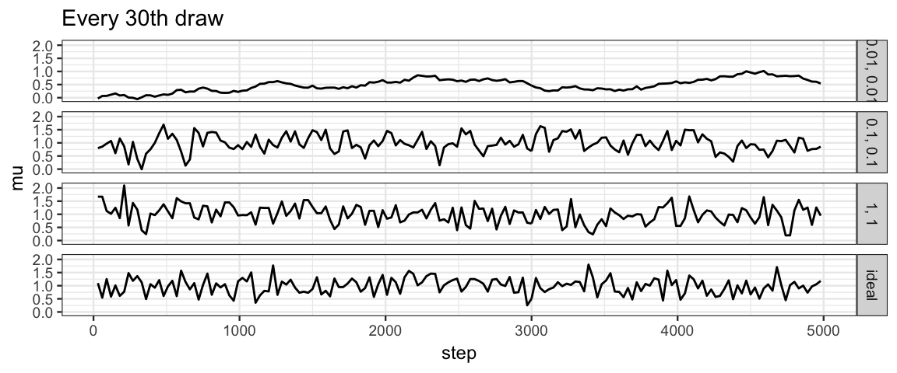
If we thin to every 20th value, our chains with size = 1 and size = 0.1
look quite similar to the ideal chain.
The chain with size = 0.01 still moves too slowly through
the parameter space.
So tuning parameters will affect the effective sample size.
7.5.2.5 Discarding the first portion of a chain
The first portion of a chain may not work as well. This portion is typically removed from the analysis since it is more an indication of the starting values used than the long-run sampling from the posterior.
gf_line(log_sigma ~ step | size ~ ., data = Norm_Tours) 
gf_path(log_sigma ~ mu | size ~ (step > 500), data = Norm_Tours, alpha = 0.5) %>%
gf_density2d(log_sigma ~ mu, data = Norm_Tours) 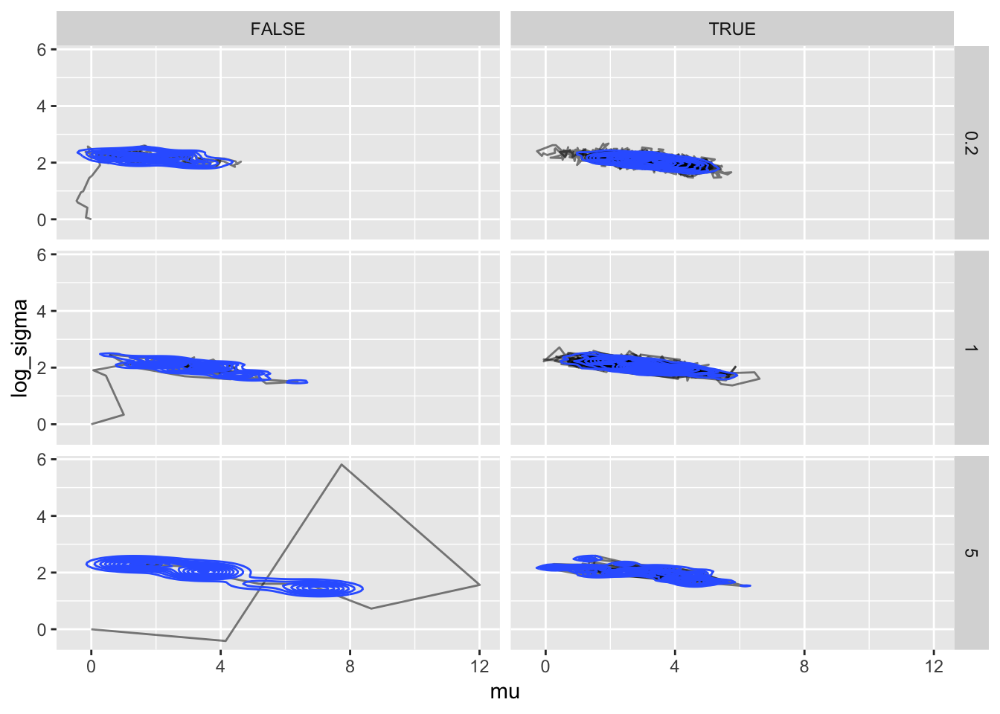
gf_histogram( ~ mu | size ~ (step > 500) , data = Norm_Tours, binwidth = 0.1)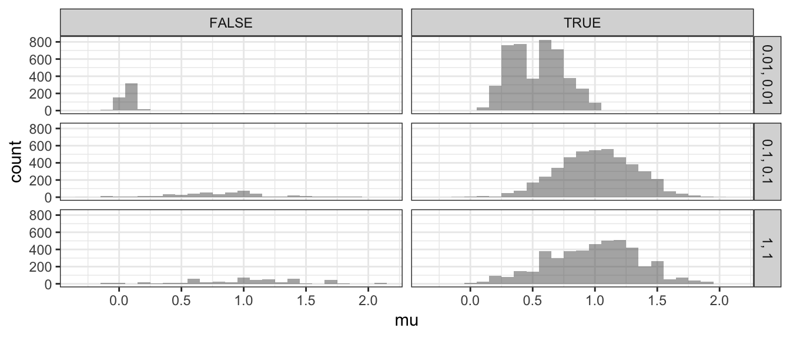
gf_histogram( ~ log_sigma | size ~ (step > 500), data = Norm_Tours, binwidth = 0.1)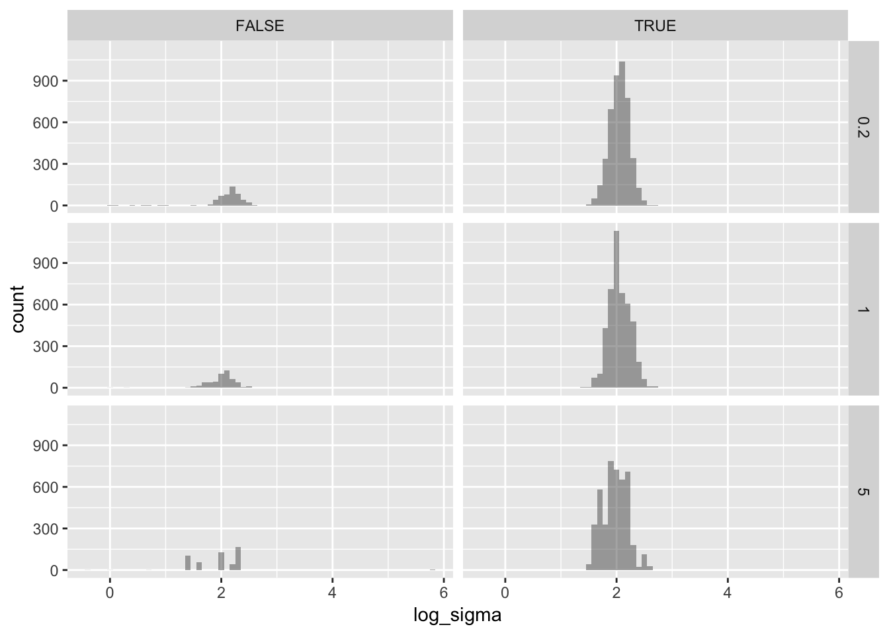
7.5.3 Issues with Metropolis Algorithm
These are really issues with all MCMC algorithms, not just the Metropolis version:
- First portion of a chain might not be very good, need to discard it
- Tuning can affect performance – how do we tune?
- Samples are correlated – although the long-run probabilities are right,
the next stop is not independent of the current one
- so our effective posterior sample size isn’t as big as it appears
7.6 Two coins
7.6.1 The model
Suppose we have two coins and want to compare the proportion of heads each coin generates.
- Parameters: \(\theta_1\), \(\theta_2\)
- Data: \(N_1\) flips of coin 1 and \(N_2\) flips of coin 2. (Results: \(z_1\) and \(z_2\) heads, respectivly.)
- Likelihood: indepdendent Bernoulli (each flip independent of the other flips, each coin independent of the other coin)
- Prior: Independent Beta distributions for each \(\theta_i\)
That is,
- \(y_{1i} \sim {\sf Bern}(\theta_1), y_{2i} \sim {\sf Bern}(\theta_2)\)
- \(\theta_1 \sim {\sf Beta(a_1, b_1)}, \theta_2 \sim {\sf Beta(a_2, b_2)}\) (independent)
For the examples below we will use data showing that 6 of 8 tosses of the first coin were heads and only 2 of 7 tosses of the second coin. But the methods work equally well with other data sets. While comparing a small number of coin tosses like this is not so interesting, the method can be used for a wide range of practical things, liking testing whether two treatments for a condition are equally effective or not.
7.6.2 Exact analysis
From this we can work out the posterior as usual. (Pay attention to the important parts of the kernel, that is, the numerators.)
\[\begin{align*} p(\theta_1, \theta_2 \mid D) &= p(D \mid \theta_1, \theta_2) p(\theta_1, \theta_2) / p(D) \\[3mm] &= \theta_1^{z_1} (1 − \theta_1)^{N_1−z_1} \theta_1^{z_2} (1 − \theta_2)^{N_2−z_2} p(\theta_1, \theta_2) / p(D) \\[3mm] &= \frac{ \theta_1^{z_1} (1 − \theta_1)^{N_1 − z_1} \theta_1^{z_2} (1 − \theta_2)^{N_2 − z_2} \theta_1^{a_1−1}(1 − \theta_1)^{b_1 - 1} \theta_2^{a_2−1}(1 − \theta_2)^{b_2 - 1}} {p(D)B(a_1, b_1)B(a_2, b_2)} \\[3mm] &= \frac{ \theta_1^{z_1 + a_1 − 1}(1 − \theta_1)^{N_1 − z_1 + b_1 − 1} \theta_2^{z_2 + a_2 − 1}(1 − \theta_2)^{N_2 − z_2 + b_2 − 1} }{p(D)B(a_1, b_1)B(a_2, b_2)} \end{align*}\]
So the posterior distribution of \(\langle \theta_1, \theta_2\) is two independent Beta distributions: \({\sf Beta}(z_1 + a, N_1 - z_1 + b_1)\) and \({\sf Beta}(z_2 + a, N_2 - z_2 + b_2)\).
Some nice images of these distributions appear on page 167.

7.6.3 Metropolis
metro_2coins <- function(
z1, n1, # z = successes, n = trials
z2, n2, # z = successes, n = trials
size = c(0.1, 0.1), # sds of jump distribution
start = c(0.5, 0.5), # value of thetas to start at
num_steps = 5e4, # number of steps to run the algorithm
prior1 = dbeta, # function describing prior
prior2 = dbeta, # function describing prior
args1 = list(), # additional args for prior1
args2 = list() # additional args for prior2
) {
theta1 <- rep(NA, num_steps) # trick to pre-alocate memory
theta2 <- rep(NA, num_steps) # trick to pre-alocate memory
proposed_theta1 <- rep(NA, num_steps) # trick to pre-alocate memory
proposed_theta2 <- rep(NA, num_steps) # trick to pre-alocate memory
move <- rep(NA, num_steps) # trick to pre-alocate memory
theta1[1] <- start[1]
theta2[1] <- start[2]
size1 <- size[1]
size2 <- size[2]
for (i in 1:(num_steps-1)) {
# head to new "island"
proposed_theta1[i + 1] <- rnorm(1, theta1[i], size1)
proposed_theta2[i + 1] <- rnorm(1, theta2[i], size2)
if (proposed_theta1[i + 1] <= 0 ||
proposed_theta1[i + 1] >= 1 ||
proposed_theta2[i + 1] <= 0 ||
proposed_theta2[i + 1] >= 1) {
proposed_posterior <- 0 # because prior is 0
} else {
current_prior <-
do.call(prior1, c(list(theta1[i]), args1)) *
do.call(prior2, c(list(theta2[i]), args2))
current_likelihood <-
dbinom(z1, n1, theta1[i]) *
dbinom(z2, n2, theta2[i])
current_posterior <- current_prior * current_likelihood
proposed_prior <-
do.call(prior1, c(list(proposed_theta1[i+1]), args1)) *
do.call(prior2, c(list(proposed_theta2[i+1]), args2))
proposed_likelihood <-
dbinom(z1, n1, proposed_theta1[i+1]) *
dbinom(z2, n2, proposed_theta2[i+1])
proposed_posterior <- proposed_prior * proposed_likelihood
}
prob_move <- proposed_posterior / current_posterior
# sometimes we "sail back"
if (runif(1) > prob_move) { # sail back
move[i + 1] <- FALSE
theta1[i + 1] <- theta1[i]
theta2[i + 1] <- theta2[i]
} else { # stay
move[i + 1] <- TRUE
theta1[i + 1] <- proposed_theta1[i + 1]
theta2[i + 1] <- proposed_theta2[i + 1]
}
}
tibble(
step = 1:num_steps,
theta1 = theta1,
theta2 = theta2,
proposed_theta1 = proposed_theta1,
proposed_theta2 = proposed_theta2,
move = move,
size1 = size1,
size2 = size2
)
}Metro_2coinsA <-
metro_2coins(
z1 = 6, n1 = 8,
z2 = 2, n2 = 7,
size = c(0.02, 0.02),
args1 = list(shape1 = 2, shape2 = 2), args2 = list(shape1 = 2, shape2 = 2)
)
Metro_2coinsA %>%
gf_density2d(theta2 ~ theta1)
Metro_2coinsA %>%
gf_density(~ (theta2 - theta1))
# effective sample size is much smaller than apparent sample size due to auto-correlation
acf(Metro_2coinsA$theta2 - Metro_2coinsA$theta1)
Metro_2coinsA %>% filter(step < 500) %>%
gf_path(theta2 ~ theta1, color = ~ step, alpha = 0.5) %>%
gf_point(theta2 ~ theta1, color = ~ step, alpha = 0.5) 
Metro_2coinsB <-
metro_2coins(
z1 = 6, n1 = 8,
z2 = 2, n2 = 7,
size = c(0.2, 0.2),
args1 = list(shape1 = 2, shape2 = 2), args2 = list(shape1 = 2, shape2 = 2)
)
Metro_2coinsB %>%
gf_density2d(theta2 ~ theta1)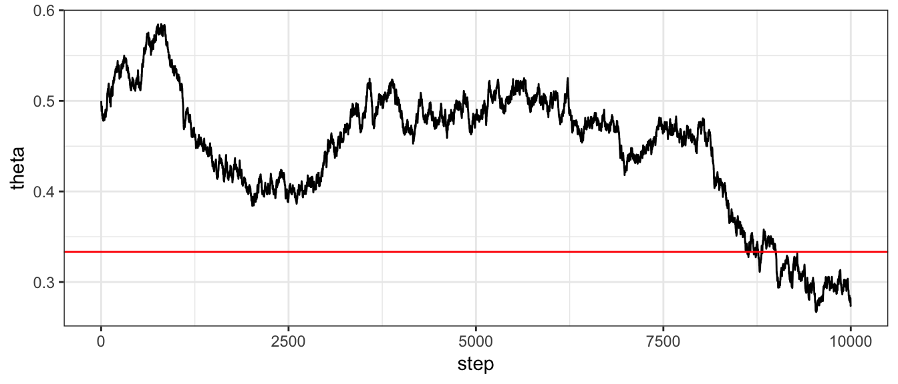
Metro_2coinsB %>%
gf_density(~ (theta2 - theta1))
# effective sample size is better but still quite a bit
# smaller than apparent sample size due to auto-correlation
acf(Metro_2coinsB$theta2 - Metro_2coinsB$theta1)
Metro_2coinsB %>% filter(step < 500) %>%
gf_path(theta2 ~ theta1, color = ~ step, alpha = 0.5) %>%
gf_point(theta2 ~ theta1, color = ~ step, alpha = 0.5) 
7.6.4 Gibbs sampling
Gibbs sampling provides an attempt to improve on the efficiency of the standard Metropolis algorithm by using a different method to propose new parameter values. The idea is this:
Pick one of the parameter values: \(\theta_i\)
Determine the posterior distribution of \(\theta_i\) using current estimates of the other parameters \(\{\theta_j \mid j \neq i\}\)
- This won’t be exactly right, because those estimates are not exactly right, but it should be good when the parameters estimates are close to correct.
Sample from the posterior distribution for \(\theta_i\) to get a new proposed value for \(\theta_i\).
- Always accept this proposal, since it is being sampled from a distribution that already makes more likely values more likely to be proposed.
Keep cycling through all the parameters, each time updating one using the current estimates for the others.
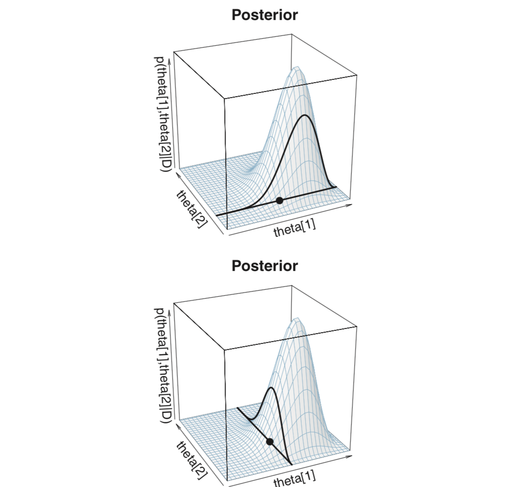
It takes some work to show that this also converges, and in practice it is often more efficient than the basic Metropolis algorithm. But it is limited to situations where the marginal posterior can be be sampled from.
In our example, we can work out the marginal posterior fairly easily:
\[\begin{align*} p(\theta_1|\theta_2, D) &= p(\theta_1, \theta_2|D)/p(\theta_2|D) \\ &= p(\theta_1, \theta_2|D) \int d\theta_1 p(\theta_1, \theta_2|D) \\ &= \frac{\mathrm{dbeta}(\theta_1, z_1 + a_1, N_1 −z_1 + b_1) \cdot \mathrm{dbeta}(\theta_2, z_2 + a_2, N_2 −z_2 + b_2)} {\int d\theta_1 \mathrm{dbeta}(\theta_1, z_1 + a_1, N_1 −z_1 +b_1) \cdot \mathrm{dbeta}(\theta_2 \mid z_2 +a_2, N_2 −z_2 +b_2)} \\ &= \frac{\mathrm{dbeta}(\theta_1, z_1 + a_1, N_1 − z_1 + b_1) \cdot \mathrm{dbeta}(\theta_2, z_2 + a_2, N_2 − z_2 + b_2)} {\mathrm{dbeta}(\theta_2 \mid z_2 + a_2, N_2 −z_2 +b_2) \int d\theta_1 \mathrm{dbeta}(\theta_1, z_1 + a_1, N_1 − z_1 + b_1)} \\ &= \frac{\mathrm{dbeta}(\theta_1, z_1 + a_1, N_1 − z_1 + b_1)} {\int d\theta_1 \mathrm{dbeta}(\theta_1, z_1 + a_1, N_1 − z_1 + b_1)} \\ &= \mathrm{dbeta}(\theta_1, z_1 + a_1, N_1 − z_1 + b_1) \end{align*}\]
In other words, \(p(\theta_1 \mid \theta_2, D) = p(\theta_1, D)\), which isn’t surprising since we already know that the posterior distributions \(\theta_1\) and \(\theta_2\) are independent. (In more complicated models, the marginal posterior may depend on all of the parameters, so the calculation above might not be so simple.) Of course, the analogous statement holds for \(\theta_2\) in this model.
This examples shows off Gibbs sampling in a situation where it shines: when the posterior distribution is a collection of independent marginals.
gibbs_2coins <- function(
z1, n1, # z = successes, n = trials
z2, n2, # z = successes, n = trials
start = c(0.5, 0.5), # value of thetas to start at
num_steps = 1e4, # number of steps to run the algorithm
a1, b1, # params for prior for theta1
a2, b2 # params for prior for theta2
) {
theta1 <- rep(NA, num_steps) # trick to pre-alocate memory
theta2 <- rep(NA, num_steps) # trick to pre-alocate memory
theta1[1] <- start[1]
theta2[1] <- start[2]
for (i in 1:(num_steps-1)) {
if (i %% 2 == 1) { # update theta1
theta1[i+1] <- rbeta(1, z1 + a1, n1 - z1 + b1)
theta2[i+1] <- theta2[i]
} else { # update theta2
theta1[i+1] <- theta1[i]
theta2[i+1] <- rbeta(1, z2 + a2, n2 - z2 + b2)
}
}
tibble(
step = 1:num_steps,
theta1 = theta1,
theta2 = theta2,
)
}Gibbs <-
gibbs_2coins(z1 = 6, n1 = 8,
z2 = 2, n2 = 7,
a1 = 2, b1 = 2, a2 = 2, b2 = 2)
Gibbs %>% gf_density2d(theta2 ~ theta1)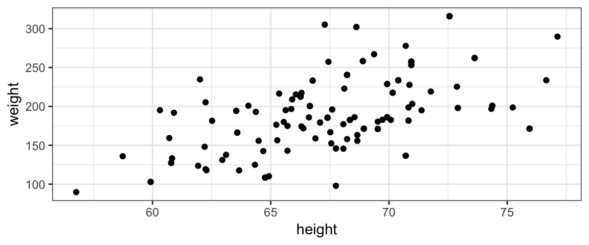
Gibbs %>% gf_dens( ~ theta1)
acf(Gibbs$theta1)
Gibbs %>% filter(step < 500) %>%
gf_path(theta2 ~ theta1, color = ~ step, alpha = 0.5) %>%
gf_point(theta2 ~ theta1, color = ~ step, alpha = 0.5) 
Note: Software like JAGS only records results each time it makes a complete cycle through the parameters. We could do that by keeping every other row:
Gibbs %>% filter(step %% 2 == 0) %>% gf_density2d(theta2 ~ theta1)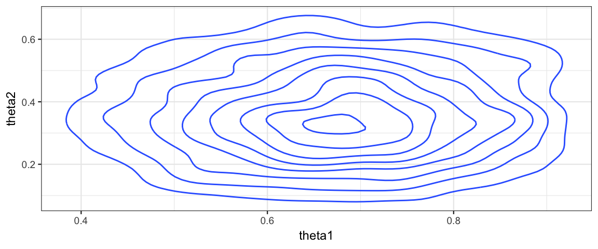
Gibbs %>% filter(step %% 2 == 0) %>% gf_density( ~ (theta2 - theta1))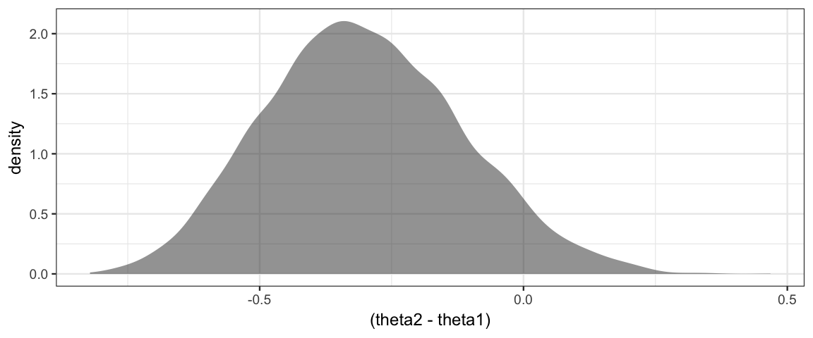
Gibbs %>% filter(step %% 2 == 0) %>%
mutate(difference = theta2 - theta1) %>%
pull(difference) %>%
acf()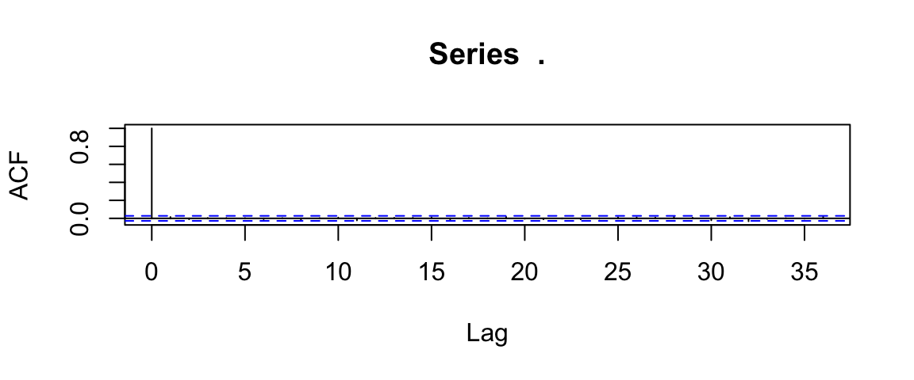
Gibbs %>% filter(step < 500, step %% 2 == 0) %>%
gf_path(theta2 ~ theta1, color = ~ step, alpha = 0.5) %>%
gf_point(theta2 ~ theta1, color = ~ step, alpha = 0.5) 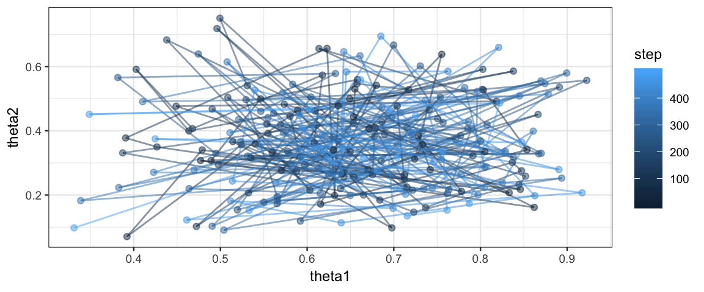
7.6.5 Advantages and Disadvantages of Gibbs vs Metropolis
Advantages
- No need to tune. The preformance of the Metropolis algorithm depends on the jump rule used. Gibbs “auto-tunes” by using the marginal posteriors.
- Gibbs sampling has the potential to sample much more efficiently than Metropolis. It doesn’t propose updates only to reject them, and doesn’t suffer from poor tuning that can make Metropolis search very slowly through the posterior space.
Disadvantages
- Less general: We need to be able to sample from the marginal posterior.
- Gibbs sampling can be slow if the posterior has highly correlated parameters since given all but one of them, the algorithm with be very certain about the remaining one and adjust it only a very small amount. It is hard for Gibbs samplers to quickly move along “diagonal ridges” in the posterior.
The good news is that other people have done the hard work of coding up Gibbs sampling for us, we just need to learn how to describe the model in a way that works with their code. We will be using JAGS (just another Gibbs Sampler) and later Stan (which generalizes the metropolis algorithm in a different way) to fit more interesting models that would be too time consuming to custom code on our own. The examples in the chapter are to help us understand better how these algorithms work so we can interpret the results we obtian when using them.
7.6.6 So what do we learn about the coins?
We have seen that we can fit this model a number of different ways now, but we haven’t actually looked at the results. Are the coins different? How much different?
Since the Gibbs sampler is more efficient than the Metropolis algorithm for this situation, we’ll use the posterior samples from the Gibbs sampler to answer. We are interested in \(\theta_2 - \theta_1\), the difference in the biases of the two coins. To learn about that, we simply investigate the distribution of that quantity in our posterior samples. (Note: You cannot learn about this difference by only considering \(\theta_1\) and \(\theta_2\) sepearately.)
gf_dhistogram(~(theta2 - theta1), data = Gibbs) %>%
gf_dens()
hdi(Gibbs %>% mutate(difference = theta2 - theta1), pars = "difference")| par | lo | hi | prob |
|---|---|---|---|
| difference | -0.6623 | 0.057 | 0.95 |
mosaic::prop(~(theta2 - theta1 > 0), data = Gibbs)## prop_TRUE
## 0.0601We don’t have much data, so the posterior distribution of the difference in biases is pretty wide. 0 is within the 95% HDI for \(\theta_2 - \theta_1\), so we don’t have compelling evidence that the two biases are different based on this small data set.
7.7 MCMC posterior sampling: Big picture
7.7.1 MCMC = Markov chain Monte Carlo
- Markov chain because the process is a Markov process with probabilities of transitioning from one state to another
- Monte Carlo because it inovles randomness. (Monte Carlo is a famous casino location.)
We will refer to one random walk starting from a pariticular starting value as a chain.
7.7.2 Posterior sampling: Random walk through the posterior
Our goal, whether we use Metropolis, Gibbs sampling, Stan, or some other MCMC posterior samping method, is to generate random values from the posterior distribution. Ideally these samples should be
representative of the posterior and not of other artifacts like the starting location of the chain, or tuning parameters used to generate the walk.
accurate to the posterior. If we run the algorithm multiple times, we would like the results to be similar from run to run. (They won’t match exactly, but if they are all giving good approximations to the same thing, then they should all close to each other.)
efficient. The theory says that all of these methods converge to the correct posterior distribution, but in practice, we can only do a finite run. If the sampling is not efficient enough, our finite run might give us a distorted picture (that would eventually have been corrected had we run things long enough).
If we are convinced that the posterior sampling is of high enough quality, we can use the posterior samples to answer all sorts of questions relatively easily.
7.7.3 Where do we go from here?
Learn to design more interesting models to answer more interesting questions.
Learn to describe these models and hand them to JAGS or Stan for posterior sampling.
Learn to diagnose posterior samples to detect potential problems with the posterior sampling.
Learn how to interpret the results.
7.8 Exercises
In this exercise, you will see how the Metropolis algorithm operates with a multimodal prior.
Define the function \(p(\theta) = (cos(4 \pi \theta) + 1)^2/1.5\) in R.
Use
gf_function()to plot \(p(\theta)\) on the interval from 0 to 1. [Hint: Use thexlimargument.]Use
integrate()to confirm that \(p\) is a pdf.Run
metro_bern()with \(p\) as your prior, with no data (x = 0,n = 0), and withsize = 0.2. Plot the posterior distribution of \(\theta\) and explain why it looks the way it does.Now create a posterior histogram or density plot using
x = 2,n = 3. Do the results look reasonable? Explain.Now create a posterior histogram or density plot with
x = 1,n = 3, andsize = 0.02. Comment on how this compares to plot you made in the previous item.Repeat the previous two items but with
start = 0.15andstart = 0.95. How does this help explain what is happening? Why is it good practice to run MCMC algorithms with several different starting values as part of the diagnositc process?How would looking at trace plots from multiple starting points help you detect this problem? (What would the trace plots look like when things are good? What would they look like when things are bad?)